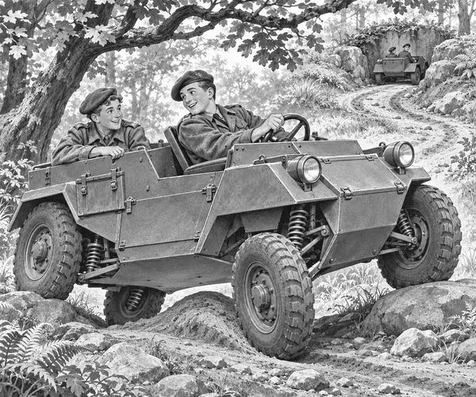

During World War Two, an army needed to know what lay ahead.
Was the road open?
Was the bridge safe?
Could a long line of vehicles get through?
A scout crew went to look.
They needed a vehicle that was small, quick and quiet.
Britain built the Daimler Dingo scout car.
It was much smaller than a tank.
It carried a crew of only two.
One person drove.
The other watched the route and passed messages.
The Dingo sat low to the ground.
That made it easier to hide behind a wall or hedge.
All four wheels were driven by the engine.
Each wheel had its own suspension.
One wheel could rise over a rock while the others stayed down.
The bottom of the car was smooth.
It could slide across a rounded bump instead of catching on it.
Bump. Bob. Roll.
But the Dingo's strangest trick was in its gearbox.
It had five gears for driving forwards.
It could use the same five gears in reverse.
That meant it could travel equally fast in either direction.
A narrow lane did not always have room to turn around.
The driver could simply look behind and reverse away.
The driver's seat was set at a slight angle.
This helped the driver twist round and see through the rear opening.
Whirr. Roll. Back we go!
Gear fact: The Dingo had an unusual five-speed pre-selector gearbox. The crew chose the next gear before it was needed.
Speed fact: The little Dingo could reach about 55 miles per hour, yet it weighed less than three tonnes.
The first Dingos entered service in 1939.
Crews used them to scout and carry messages.
They served in North Africa, Italy and Normandy.
More than six thousand were built.
The Dingo was not the biggest army vehicle.
It did not need to be.
Its job was to look, report and move.
And if the road ahead became a dead end?
The little scout car had a very clever way back.